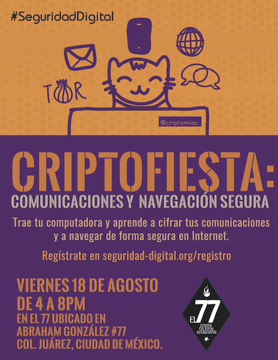

Criptofiesta#1 en El 77
20 agosto, 2017 / Aprendizajes / by Indi
¡El 18 de agosto realizamos nuestra primera Criptofiesta! Tuvimos como invitadxs a CriptoMiau, y a Angélica y Gus de Mentes Ambulantes.
Esa tarde aprendimos sobre:


- Navegación Segura: Recomendaciones para navegar de forma segura, cifrando tu navegación con Tunnel Bear, un servicio gratuito de VPN disponible para descargar en tu computadora, navegador y tu móvil.
Ahora desde la CritoFiesta impartiendo los talleres de #seguridadDigital colaborando con nuestros amigos @segudigital #protegetusdatos pic.twitter.com/W6ISbSqpi9
— Mentes Ambulantes (@MenteAmbulantes) 18 de agosto de 2017
- Cifrado con GPG: Cómo enviar correos seguros cifrando la información que envías y almacenar archivos cifrados en tu equipo de cómputo. En esta ocasión aprendimos con Mailvelope, una extensión de navegador disponible para Chrome y Firefox.
- Seguridad en WordPress: Recomendaciones básicas y plugins que puedes usar para hacer respaldos de tus páginas en WordPress y reforzar la seguridad de tu sitio web.
- Condones Digitales: A través de la construcción de un circuito sencillo con 2 terminales de USB, los participantes conocieron la anatomía del USB y cómo evitar que al conectarnos en estaciones de carga públicas o en computadoras ajenas, podamos infectarnos o que nos roben información.
Esta es apenas la criptofiesta #1 pero vienen ¡muchas más! Gracias a todas las personas que pasaron la tarde con nostrxs aprendiendo de #SeguridadDigital ¡Nos vemos pronto!aquí @GusMerckel de @MenteAmbulantes haciendo condones digitales como los de caja amiga de @derechosdigital #SeguridadDigital pic.twitter.com/VJr50Cueqc
— #SeguridadDigital (@segudigital) 19 de agosto de 2017
¡Agradecemos a El Centro Cultural Autogestivo 77 por su apoyo! También puedes leer aquí el post de Mentes Ambulantes sobre la Criptofiesta.Está buenísima la #criptofiesta de @segudigital en @el77cultural ?? pic.twitter.com/4cOiXQDTOm
— criptomiau (@criptomiau) 18 de agosto de 2017